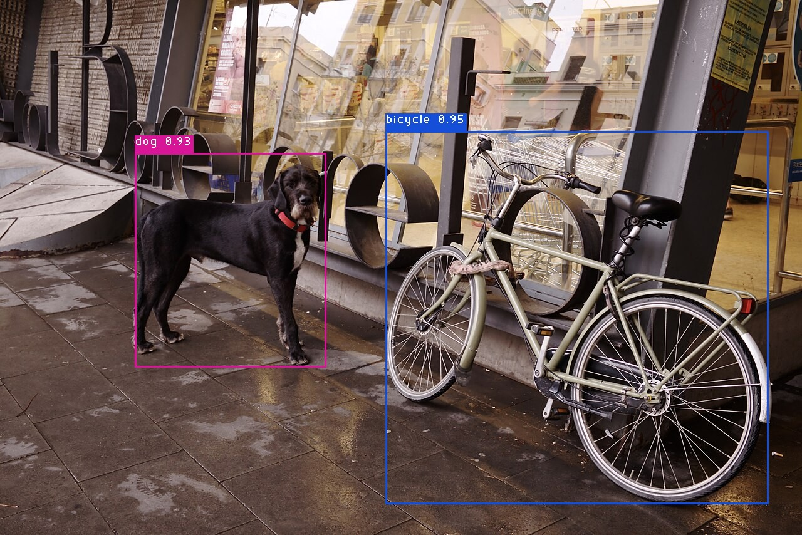

Hello World Example
This walkthrough takes the official YOLOX object detector through the two OAAX stages and prints what it finds in a photo:
- Convert the ONNX model with the chip's conversion toolchain (a Docker image).
- Run the converted model with the chip's runtime library, through one small C host application.
The host is the same for every chip: only the runtime library and the converted model change. That is the point of OAAX.

The picture the host writes. Photo: Dog from Barcelona 01.jpg by Nicolas Vigier, CC0 1.0.
Requirements
- A Linux x86_64 machine (Ubuntu 22.04 or higher) with Docker that your user can run without
sudo. uv, which runs the OAAX tools:curl -LsSf https://astral.sh/uv/install.sh | sh, thenexport PATH="$HOME/.local/bin:$PATH".- Build tools:
sudo apt-get install -y git curl cmake build-essential libgomp1 ca-certificates zip(zipis needed for the Intel, DEEPX and Hailo tabs). - The hardware of the chip you pick, with its driver on the machine that runs the model: for Intel GPU or NPU the Intel drivers (see the Intel page; the CPU device needs none), for NVIDIA a driver and the CUDA 13 libraries, for DEEPX a card with DX-RT 3.3.2, for Hailo a Hailo-8 with HailoRT 4.20.0.
1. Build the host and get the model
The YOLOX example is a C program that loads any OAAX 2.0 runtime, runs the model on an image, prints the detections and draws them. It has no dependencies besides a C compiler and CMake.
git clone https://github.com/OAAX-standard/examples.git
cd examples/yolox-example
cmake -S . -B build && cmake --build build
bash fetch_model.sh # writes models/yolox_s.onnx (36 MB, sha256 checked)
2. Convert and run
Downloads 844 MB (toolchain 835 MB, runtime 8.5 MB).
uvx oaax-manager fetch runtime cpu
uvx oaax-manager fetch toolchain cpu
docker load -i oaax-cpu-toolchain-2.0.0.tar
mkdir -p model && cp models/yolox_s.onnx model/
docker run --rm --user "$(id -u):$(id -g)" -v "$PWD/model:/model" oaax-cpu-toolchain:2.0.0 /model/yolox_s.onnx /model/output
./build/yolox_host runtime-cpu-2.0.0-linux-x86_64/libRuntimeLibrary.so model/output/yolox_s-simplified.onnx artifacts/dog-bicycle.jpg
More on the CPU toolchain and runtime: CPU page.
Downloads 1.3 GB (toolchain 1.2 GB, runtime 90 MB). The config keeps the model's float32 input; by default the Intel toolchain converts to FP16 and the runtime then expects FP16 tensors.
uvx oaax-manager fetch runtime intel
uvx oaax-manager fetch toolchain intel
docker load -i oaax-intel-toolchain-2.0.0.tar
mkdir -p intel/input intel/output && cp models/yolox_s.onnx intel/input/model.onnx && cp configs/intel.json intel/input/config.json
(cd intel/input && zip model.zip model.onnx config.json)
docker run --rm --user "$(id -u):$(id -g)" -v "$PWD/intel/input:/input" -v "$PWD/intel/output:/output" oaax-intel-toolchain:latest /input/model.zip /output
./build/yolox_host runtime-intel-2.0.0-linux-x86_64/libRuntimeLibrary.so intel/output/model.zip artifacts/dog-bicycle.jpg
When the container runs as your own user (--user $(id -u):$(id -g)), the conversion prints harmless OpenVINO telemetry warnings. The runtime uses the CPU device by default: add --config device_type=GPU (or NPU) to use that device, and check effective_device in the Runtime info line, because a device that cannot run the model falls back to the CPU. More: Intel page.
Downloads 1.8 GB (toolchain 967 MB, runtime 823 MB). This is the ONNX Runtime build: the conversion needs no GPU, and the run needs an NVIDIA driver for CUDA 13 and the CUDA 13 libraries (libcudart, libcublas, libcublasLt, libcufft).
uvx oaax-manager fetch runtime nvidia-ort --variant cuda13
uvx oaax-manager fetch toolchain nvidia-ort
docker load -i oaax-nvidia-onnxruntime-toolchain-2.0.0.tar
mkdir -p ort && cp models/yolox_s.onnx ort/model.onnx
docker run --rm --user "$(id -u):$(id -g)" -v "$PWD/ort:/model" oaax-nvidia-toolchain:2.0.0 /model/model.onnx /model/output
./build/yolox_host runtime-nvidia-ort-2.0.0-linux-x86_64-cuda13/libRuntimeLibrary.so ort/output/model-simplified.onnx artifacts/dog-bicycle.jpg
On an RTX A4000 this takes about 11 ms per request. TensorRT, the faster NVIDIA runtime, and the other CUDA versions: NVIDIA page.
Downloads 6.1 GB (toolchain 6.1 GB, runtime 180 KB) and 100 calibration images from DEEPX. The conversion takes about 5 minutes on any x86_64 machine; running the model needs a DEEPX card with DX-RT 3.3.2 and its driver, so copy deepx/out/yolox_s.dxnn and the runtime there if that is another machine. The converted model takes raw uint8 NHWC pixels, hence the two flags.
. /etc/os-release
uvx oaax-manager fetch runtime deepx --variant ubuntu$VERSION_ID-dxrt3.3.2
uvx oaax-manager fetch toolchain deepx
docker load -i oaax-deepx-toolchain-2.0.0.tar
mkdir -p deepx/calibration_dataset
curl -fsSL https://sdk.deepx.ai/dataset/calibration_dataset.tar.gz | tar xz --strip-components=1 -C deepx/calibration_dataset
cp models/yolox_s.onnx deepx/ && cp configs/deepx.json deepx/yolox_s.json
(cd deepx && zip -qr yolox_s.zip yolox_s.onnx yolox_s.json calibration_dataset)
docker run --rm --user "$(id -u):$(id -g)" -v "$PWD/deepx:/work" oaax-deepx-toolchain:2.0.0 /work/yolox_s.zip /work/out
./build/yolox_host runtime-deepx-*/libRuntimeLibrary.so deepx/out/yolox_s.dxnn artifacts/dog-bicycle.jpg --layout nhwc --dtype uint8
On a DX-M1 this takes about 24 ms per request. More: DEEPX page.
Downloads 1.2 GB (toolchain 1.2 GB, runtime 8 MB). Converting needs Hailo's own SDK, which is not redistributable: the Dataflow Compiler wheel, the HailoRT wheel and the HailoRT .deb, in a hailo-deps/ folder (see the Hailo page). The conversion takes about 14 minutes; running the model needs a Hailo-8 with HailoRT 4.20.0.
uvx oaax-manager fetch runtime hailo --variant hailort4.20.0
uvx oaax-manager fetch toolchain hailo
docker load -i oaax-hailo-toolchain-2.0.0.tar
mkdir -p hailo/input hailo/output && cp models/yolox_s.onnx hailo/input/ && cp configs/hailo.json hailo/input/yolox_s.json
(cd hailo/input && zip yolox_s.zip yolox_s.onnx yolox_s.json)
docker run --rm -e PIP_FIND_LINKS=https://storage.googleapis.com/jax-releases/jax_releases.html \
-v "$PWD/hailo-deps:/app/hailo-deps" -v "$PWD/hailo/input:/app/input:ro" -v "$PWD/hailo/output:/app/output" \
onnx-to-hailo:latest /app/input/yolox_s.zip /app/output
sudo chown -R "$(id -u):$(id -g)" hailo/output # the container writes as root
./build/yolox_host runtime-hailo-2.0.0-linux-x86_64-hailort4.20.0/libRuntimeLibrary.so hailo/output/yolox_s.hailo8.onnx artifacts/dog-bicycle.jpg --input-name input0
The SDK renames the model's input to input0, hence the flag. On a Hailo-8 this takes about 12 ms per request. More: Hailo page.
What you should see
On the CPU (the other chips print their own runtime name and Runtime info line, and the same two detections; the INT8 models of DEEPX and Hailo move the boxes by a few pixels):
Runtime: OAAX CPU Runtime 2.0.0
Runtime info: {"loaded_models":1,"requests_in_flight":0,"backend_version":"1.17.3"}
Input: 'images' float32 NCHW, 1280x854 image letterboxed to 640
Output tensor 'output': type 1, shape [1, 8400, 85]
Detections (score >= 0.30, NMS IoU 0.45): 2
bicycle 0.953 ( 616, 210) - (1228, 806)
dog 0.934 ( 216, 244) - ( 521, 587)
Wrote detections.png
OK: 10 requests, first 90.5 ms (warm-up), then 91.4 ms on average (min 71.9 ms)
detections.png is the picture above. Timings depend on your machine. The program exits with a non-zero code if a request fails, and the runtime writes runtime.log in the current directory.
Other chips and builds
NVIDIA TensorRT (the fastest NVIDIA runtime), other CUDA, HailoRT and Ubuntu versions, Windows and Arm builds are on the accelerator pages: CPU, Intel, NVIDIA, Hailo, DEEPX. The example's README has the commands for every chip.
Download and check with the OAAX tools
Two small command-line tools, run with uv (the tools themselves need no install):
- oaax-manager (GitHub) downloads a runtime or toolchain for your machine and verifies its checksum:
uvx oaax-manager list # what is available (* = matches this machine)
uvx oaax-manager fetch runtime cpu # writes runtime-cpu-2.0.0-linux-x86_64/libRuntimeLibrary.so
uvx oaax-manager fetch toolchain cpu # saves oaax-cpu-toolchain-2.0.0.tar and prints the `docker load` command
The example above already uses it; the same two commands exist for every chip (intel, nvidia-ort, nvidia-trt, hailo, deepx).
- oaax-conformance (GitHub) checks a runtime or toolchain against the specification:
uvx --python 3.12 --from 'oaax-conformance[e2e]' oaax-conformance runtime ./libRuntimeLibrary.so --model @tiny-conv --out report
uvx --python 3.12 --from 'oaax-conformance[e2e]' oaax-conformance toolchain oaax-cpu-toolchain:2.0.0 --out report
Open report/report.html for the details. Exit code 0 means every required check passed. The reference CPU runtime and toolchain have known findings, so exit code 1 is expected for them.
Next steps
- Read how the host talks to a runtime: the YOLOX example README, the smaller c-example and the runtime specification.
- Use your own model: export it to ONNX (for example
yolo export model=yolov8n.pt format=onnxwith Ultralytics, which is AGPL-3.0: check the license before redistributing a model or an application built on it), convert it with the toolchain, and adapt the pre- and post-processing in the host application. - Add your own accelerator: see the specification and the reference implementation.